Panduan Penggunaan Klaar
Absensi, pengelolaan karyawan, import Excel, payroll, dan slip gaji sekolah.
Tentang panduan ini
Panduan ini menjelaskan pemakaian Klaar sehari-hari. Tidak ada langkah deploy, GitHub, atau pengaturan server. Semua gambar memakai Mode Demo dan tidak berisi data sekolah asli.
Daftar isi
Istilah penting
| Istilah | Arti |
|---|---|
| Draft payroll | Perhitungan sementara yang masih dapat dikoreksi. |
| Finalisasi | Mengunci payroll setelah semua nominal diperiksa. |
| Snapshot Excel | Salinan nilai bulan yang diimpor sebagai sumber audit. |
| Jumlah × tarif | Contoh: daycare 2 kali × Rp175.000; admin mengisi jumlah, tarif diatur di menu Gaji. |
1. Masuk sebagai admin
- Buka alamat Klaar yang diberikan pengelola.
- Pada penggunaan pertama, masukkan kode lisensi sekolah lalu pilih Aktivasi & Load.
- Masukkan nama pengguna dan password admin.
- Setelah berhasil, halaman terakhir akan tetap terbuka ketika browser direfresh selama sesi admin masih berlaku.
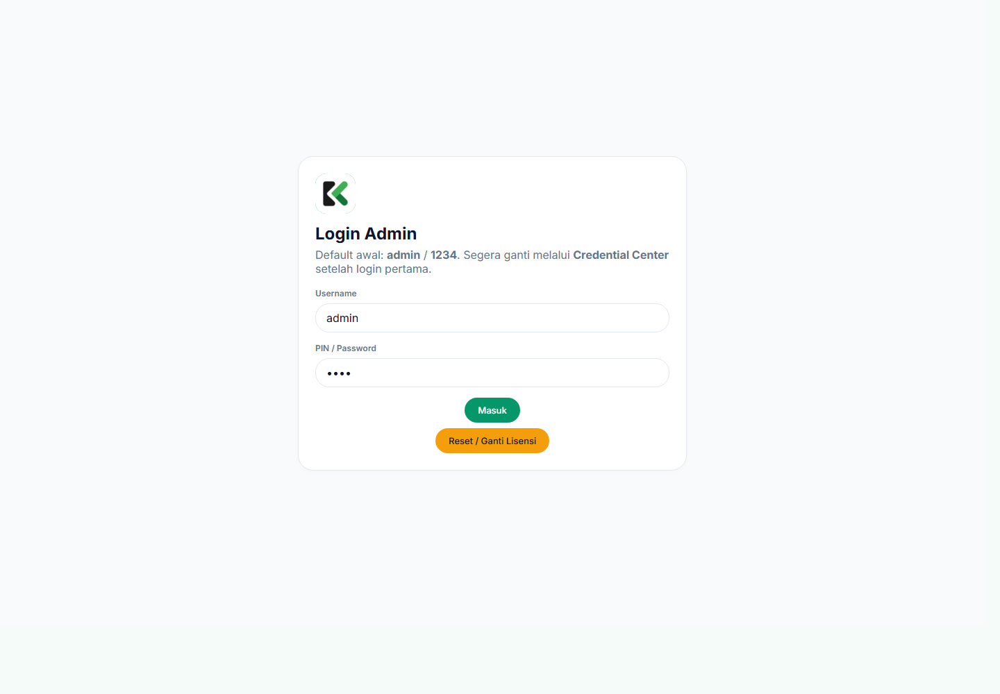
Halaman login admin. Gambar memakai Mode Demo.
Jika keluar atau sesi habis
Login kembali dengan akun admin. Kode lisensi seharusnya tetap tersimpan pada perangkat yang sama. Jika lisensi diminta ulang, pastikan tidak memakai mode incognito dan data situs tidak dihapus.
2. Memahami dashboard
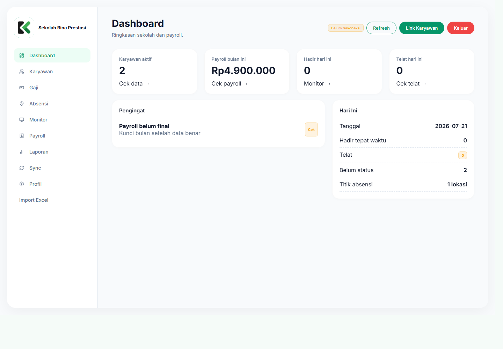
Dashboard memperlihatkan ringkasan karyawan, kehadiran, dan payroll.
Gunakan menu kiri untuk berpindah halaman. Kartu pada dashboard adalah ringkasan; data rinci berada di menu masing-masing.
- Karyawan: identitas, jabatan, golongan, PIN, dan status aktif.
- Gaji: metode penggajian, tarif, tunjangan, dan potongan.
- Absensi: lokasi, radius, jam kerja, dan aturan keterlambatan.
- Monitor: riwayat hadir, izin, sakit, alpha, dan koreksi manual.
- Payroll: jumlah kehadiran, komponen dinamis, slip, dan finalisasi.
- Laporan: ringkasan payroll yang siap diperiksa.
3. Mengelola karyawan
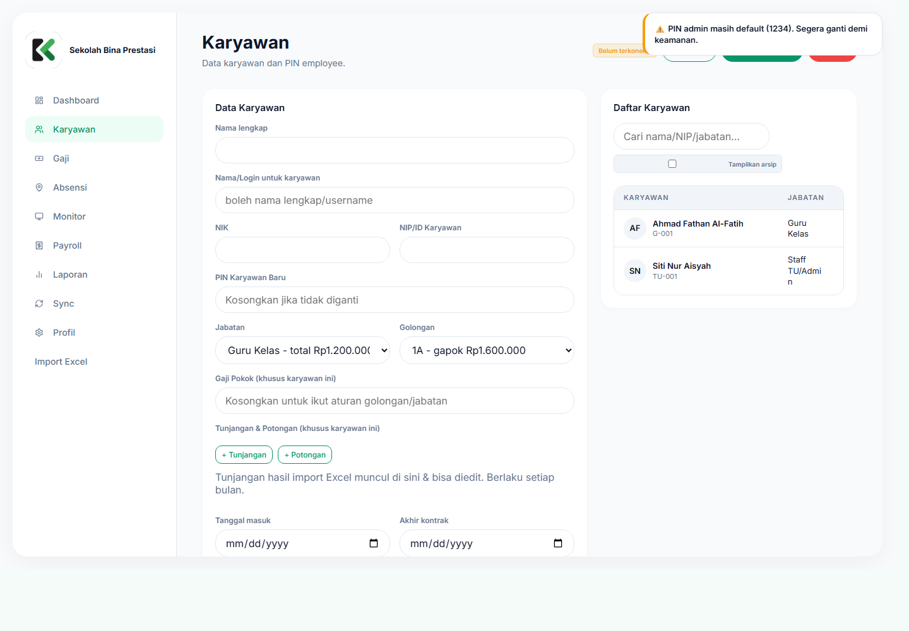
Daftar karyawan dan tindakan pengelolaannya.
Menambah karyawan
- Pilih menu Karyawan, lalu pilih tambah karyawan.
- Isi nama, identitas/NIP, unit, jabatan, golongan, tanggal masuk, serta rekening bila diperlukan.
- Tentukan PIN karyawan. Berikan PIN hanya kepada orang yang bersangkutan.
- Simpan dan pastikan karyawan muncul sebagai Aktif.
Mengubah atau menonaktifkan
Edit data jika ada perubahan jabatan, golongan, atau rekening. Untuk karyawan keluar, gunakan status nonaktif/arsip agar riwayat payroll lama tetap tersedia—jangan menghapus riwayat tanpa backup.
4. Mengatur komponen gaji
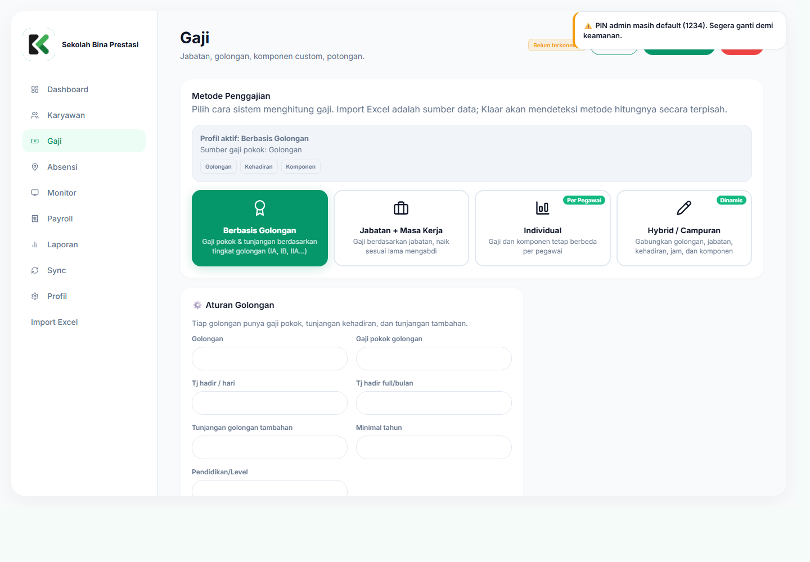
Metode, golongan, jabatan, tarif, tunjangan, dan potongan.
Pilih dasar gaji yang benar
Jika memakai Hybrid / Campuran, pilih tepat satu Sumber gaji pokok Hybrid: Golongan, Jabatan, atau nominal khusus per karyawan. Jabatan dan Golongan tetap boleh diisi pada data karyawan, tetapi sistem tidak menjumlahkannya sebagai dua gaji pokok. Sumber lain hanya menyumbang tunjangan atau aturan pendukung sesuai konfigurasi.
| Metode | Digunakan bila |
|---|---|
| Golongan | Gaji pokok dan/atau tunjangan kehadiran mengikuti golongan. |
| Jabatan + masa kerja | Gaji atau tunjangan utama mengikuti jabatan dan lama bekerja. |
| Individual | Nilai pokok berbeda untuk setiap karyawan. |
| Hybrid/campuran | Sekolah memakai gabungan golongan, jabatan, kehadiran, dan komponen lain. |
Komponen jumlah × tarif
Tarif disimpan di menu Gaji. Pada payroll admin hanya mengisi jumlah kejadian. Contoh: daycare 2 kali dengan tarif Rp175.000 menghasilkan potongan Rp350.000 pada slip.
5. Mengatur absensi & lokasi
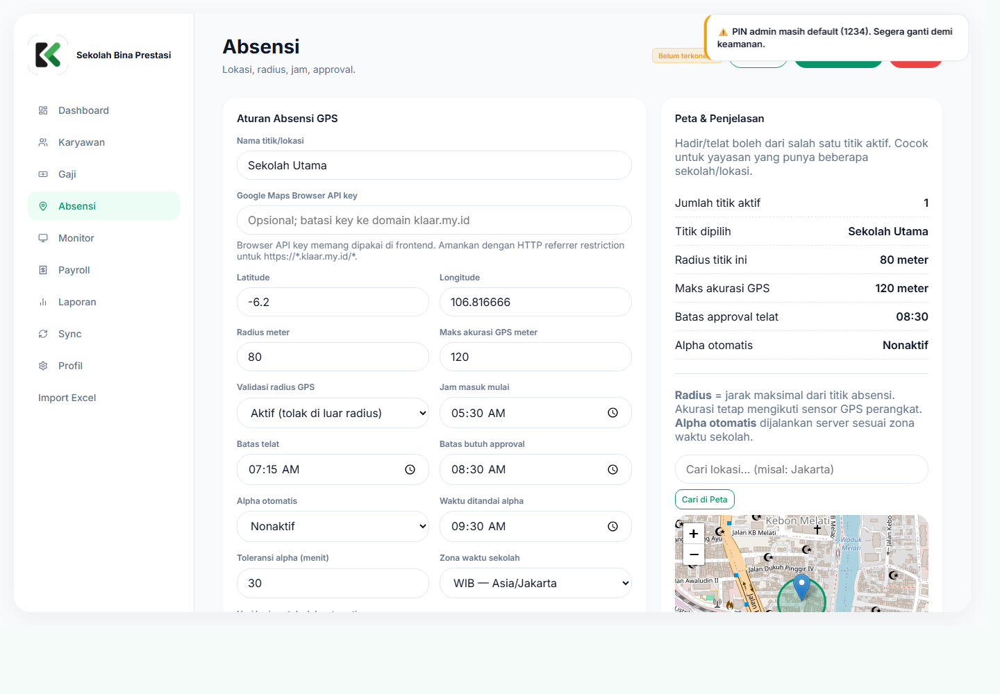
Pengaturan titik lokasi, radius, jam masuk, dan keterlambatan.
- Cari alamat sekolah pada peta, lalu letakkan titik tepat pada lokasi absensi.
- Tentukan radius yang masuk akal. Uji dari halaman depan, ruang guru, dan area terjauh yang masih dianggap sah.
- Atur jam masuk, jam pulang, batas terlambat, dan hari kerja.
- Atur batas otomatis alpha jika karyawan tidak melakukan absensi sampai jam yang ditentukan.
- Simpan, lalu lakukan uji dengan satu akun karyawan sebelum diberlakukan ke semua orang.
6. Memantau dan mengoreksi absensi
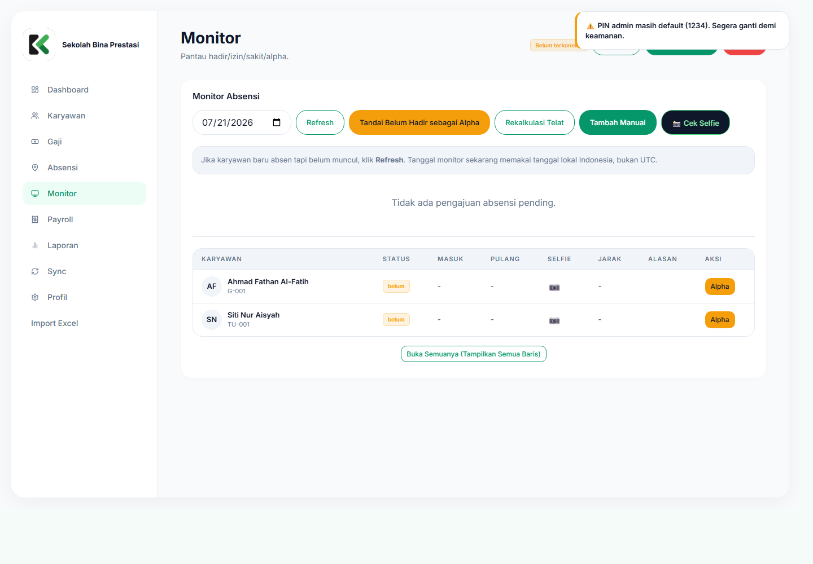
Pantau status hadir, telat, izin, sakit, alpha, dan bukti absensi.
Koreksi manual
- Pilih tanggal dan karyawan.
- Pilih status yang benar: hadir, telat, izin, sakit, atau alpha.
- Isi jam dan catatan alasan koreksi.
- Simpan, lalu buka Payroll untuk memastikan jumlah kehadiran dan tunjangannya ikut berubah.
Absensi dari Klaar Hadir tetap menjadi sumber otomatis. Edit manual berfungsi sebagai koreksi admin untuk kasus lupa absen, perangkat bermasalah, surat izin, atau verifikasi lain.
7. Import Excel
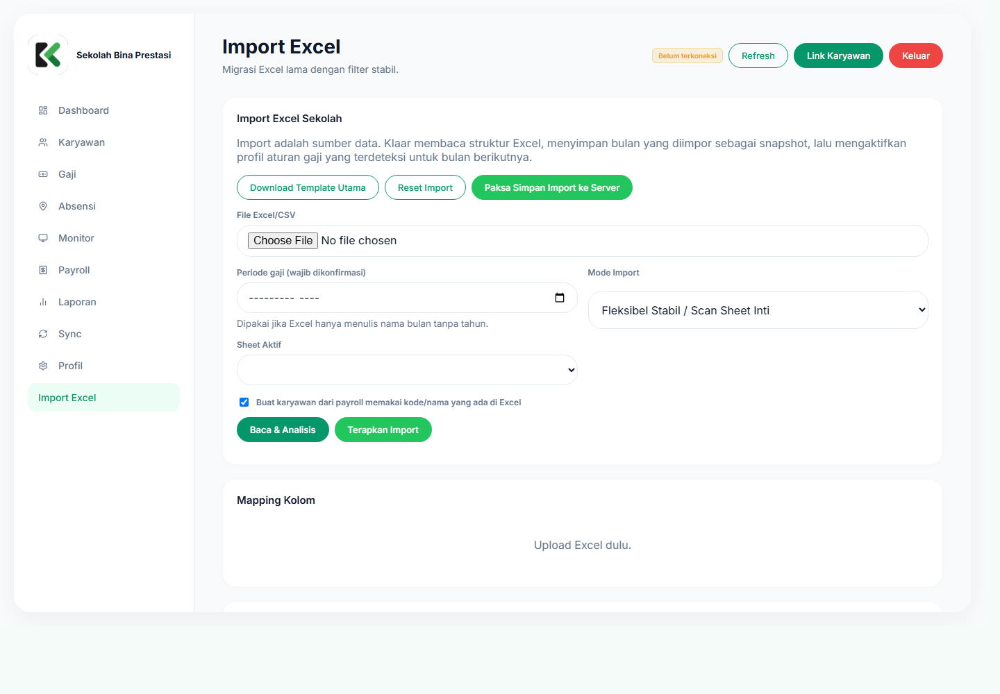
Klaar menganalisis sheet, header, metode gaji, dan komponen sebelum import diterapkan.
- Buat backup data Klaar dan simpan salinan Excel asli.
- Pilih Import Excel dan unggah file
.xlsx,.xls, atau.csv. - Pilih periode bulan dan tahun payroll dengan benar.
- Klik Baca & Analisis. Periksa sheet terpilih, mapping kolom, metode terdeteksi, dan preview.
- Selesaikan semua error merah. Selisih Rp1 pun tidak boleh diabaikan.
- Klik Terapkan Import hanya setelah jumlah karyawan, gross, potongan, koreksi, dan gaji bersih cocok.
- Periksa menu Gaji yang terbentuk, lalu buka Payroll dan slip beberapa karyawan.
Komponen setelah import
- Tetap/aturan: gaji pokok, tunjangan rumah, dan aturan golongan berlaku ke periode berikutnya.
- Bulanan: THR, bonus, rapel, lembur, dan koreksi hanya berlaku pada periode terkait.
- Jumlah × tarif: daycare, pramuka, renang, futsal, jam mengajar, dan kegiatan lain muncul sebagai jumlah; rupiah dihitung dari tarif aktif.
8. Memeriksa dan finalisasi payroll
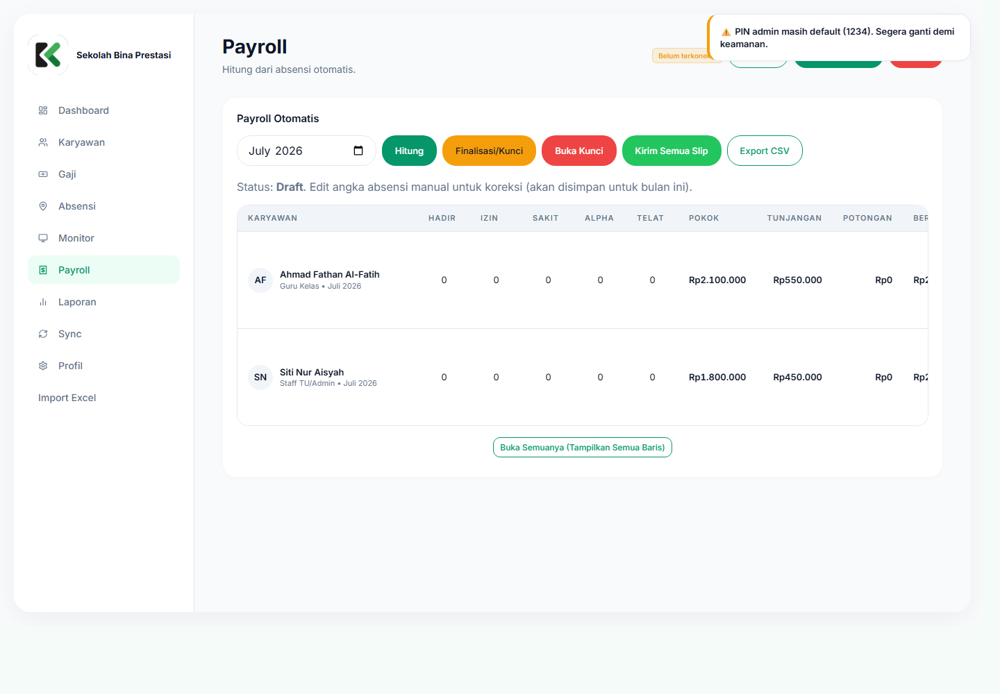
Draft payroll menampilkan kehadiran dan komponen jumlah yang dapat dikoreksi sebelum final.
- Pilih bulan payroll yang benar.
- Klik hitung/refresh payroll untuk menarik data absensi terbaru.
- Periksa hadir, telat, sakit, izin, alpha, dan seluruh jumlah komponen.
- Jika diperlukan, edit jumlah pada draft. Sistem menghitung rupiah berdasarkan tarif menu Gaji.
- Buka Slip dan cocokkan: gaji pokok + tunjangan − potongan + koreksi = gaji bersih.
- Perbaiki semua error merah atau rekonsiliasi yang belum nol.
- Finalisasi/kunci hanya setelah disetujui petugas berwenang.
Pemeriksaan minimum sebelum final
- Jumlah karyawan aktif sesuai.
- Tidak ada gaji Rp1/Rp2 akibat salah membaca jumlah.
- Semua gaji bersih sama dengan rincian slip.
- Karyawan kasus khusus diperiksa satu per satu.
- Total payroll dibandingkan dengan sumber/bulan sebelumnya.
9. Laporan, backup, dan keamanan
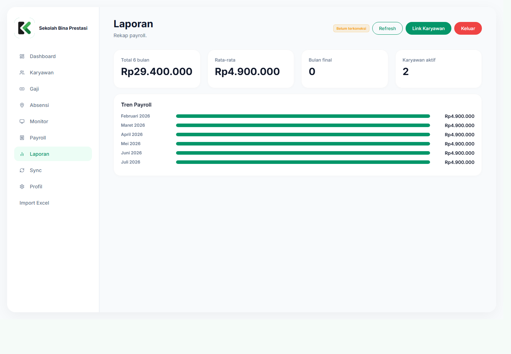
Gunakan laporan untuk pengecekan akhir dan arsip internal.
Backup yang disarankan
- Sebelum import Excel.
- Sebelum perubahan besar aturan gaji.
- Sebelum finalisasi payroll bulanan.
- Setelah payroll final dan laporan selesai.
Praktik keamanan
- Gunakan password admin unik dan jangan dibagikan.
- Jangan mengirim kode lisensi, PIN, atau data payroll melalui grup publik.
- Logout dari komputer bersama.
- Batasi hak koreksi dan finalisasi hanya untuk petugas yang ditunjuk.
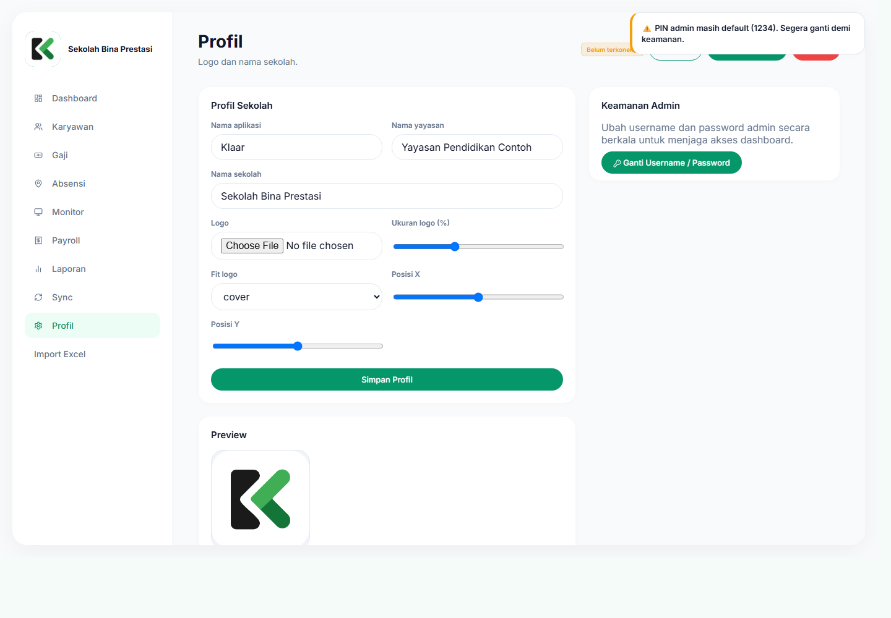
Profil sekolah digunakan untuk identitas, logo, dan informasi aplikasi.
10. Menggunakan Klaar Hadir
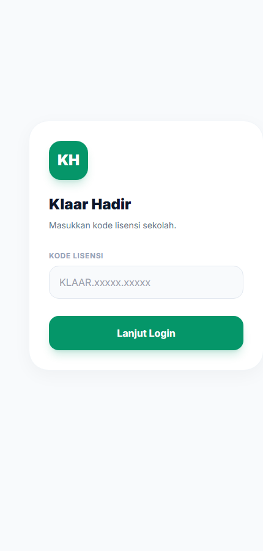
Tampilan awal Klaar Hadir di ponsel.
- Buka link yang diberikan admin sekolah. Jika tersedia, pilih unduh APK atau buka versi web.
- Masukkan/konfirmasi kode lisensi bila belum terisi otomatis.
- Login memakai identitas dan PIN yang diberikan admin.
- Izinkan lokasi presisi dan kamera saat diminta.
- Pastikan berada di radius sekolah, lalu lakukan check-in dan selfie sesuai aturan.
- Lakukan check-out ketika selesai bekerja.
Jika lokasi tidak terbaca
Nyalakan GPS, pilih izin lokasi presisi, matikan mode hemat baterai sementara, tunggu akurasi membaik, lalu coba kembali di area terbuka.
11. Pemecahan masalah
| Masalah | Yang dilakukan |
|---|---|
| Refresh kembali ke lisensi | Pastikan tidak memakai incognito, data situs tidak dihapus, dan link/domain yang dibuka benar. Login ulang bila sesi habis. |
| Data belum berubah | Tunggu sinkronisasi, refresh data, lalu periksa koneksi. Jangan mengulang import tanpa memastikan status proses sebelumnya. |
| Tunjangan hadir tidak berubah | Periksa jumlah hadir/telat, tarif golongan, hari kerja, dan status payroll belum final. Buka slip untuk melihat hasil. |
| Muncul Rp1 atau Rp2 | Jangan finalisasi. Nilai tersebut kemungkinan jumlah yang salah dianggap rupiah. Periksa mapping jumlah × tarif. |
| Import diblokir | Baca error merah, perbaiki mapping, periode, identitas karyawan, atau selisih rekonsiliasi sampai nol. |
| APK tidak menawarkan buka aplikasi | Pastikan APK terpasang dan link dibuka melalui browser utama. Jika belum, unduh dari halaman yang sama. |
| GPS di luar radius | Aktifkan lokasi presisi, tunggu akurasi, dan pastikan titik sekolah/radius sudah diuji admin. |
12. Checklist operasional
Sebelum sekolah mulai memakai Klaar
- Password admin sudah diganti.
- Profil sekolah dan logo sudah benar.
- Titik GPS dan radius diuji pada beberapa ponsel.
- Semua karyawan memiliki identitas dan PIN unik.
- Golongan, jabatan, dan tarif gaji sudah disetujui.
- Satu bulan contoh dihitung paralel dengan Excel lama.
- Total dan slip beberapa karyawan sudah sama persis.
- Backup awal sudah disimpan.
Setiap akhir bulan
- Absensi dan koreksi manual sudah lengkap.
- Kasus sakit, izin, alpha, dan terlambat sudah diverifikasi.
- Komponen bulanan dan jumlah kegiatan sudah dimasukkan.
- Rekonsiliasi tidak memiliki selisih.
- Payroll diperiksa oleh minimal dua pihak.
- Payroll sudah final dan laporan disimpan.
- Backup setelah finalisasi sudah dibuat.